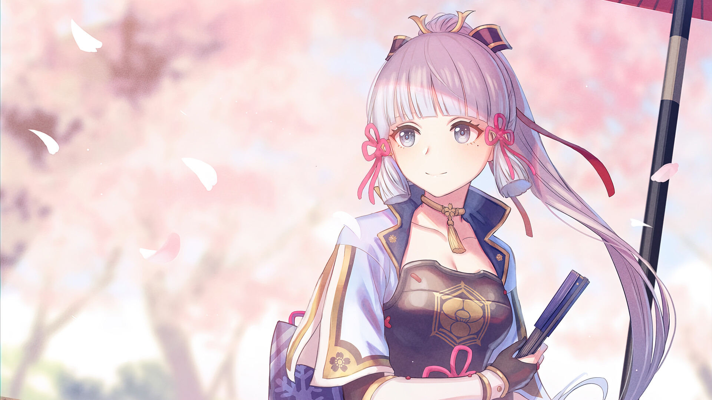
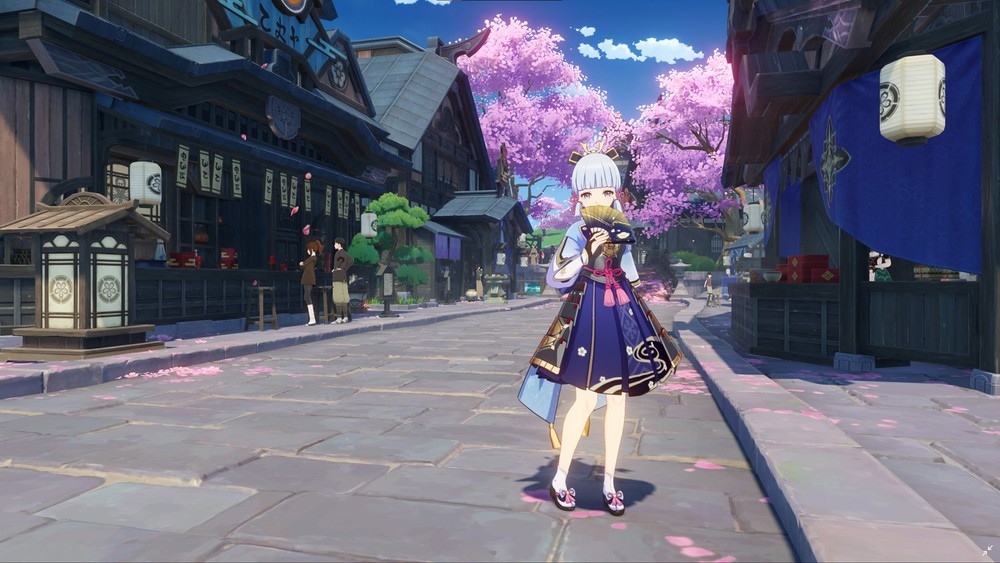
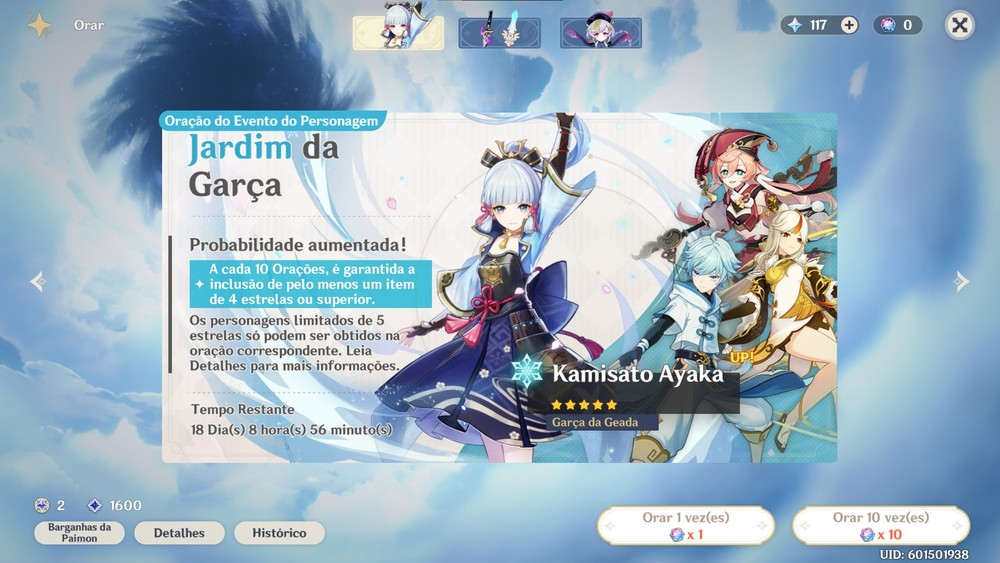

Kamisato Ayaka é uma das novas personagens jogáveis de Genshin Impact, lançada como parte da atualização 2.0, que trouxe Inazuma, a mais nova região do jogo. A espadachim cinco estrelas carrega consigo uma Visão Cryo (gelo) que exerce a função de DPS — ou seja, a principal causadora de dano da equipe do jogador. Ela também era uma das figuras mais aguardadas pelos fãs do jogo desde sua aparição original no beta fechado, ainda em 2019. Genshin Impact está disponível para download grátis no PC, PlayStation 4 (PS4), PlayStation 5 (PS5) e em versão mobile, para dispositivos Android e iPhone (iOS).

História
Filha do clã Kamisato da Comissão Yashiro de Inazuma, Ayaka é uma jovem espadachim que vem de uma linhagem nobre e é muito respeitada pelos cidadãos. Ela é muito gentil e é constantemente ovacionada pela sua dignidade, elegância, força e sabedoria, mas isso acaba por jogar muitas responsabilidades sobre seus ombros. Por ser enxergada como um símbolo de perfeição e estar sempre à frente de assuntos oficiais pela Comissão Yashiro, as pessoas não se sentem dignas para estreitar laços com Ayaka, por mais que tenham grande consideração por ela. Por essa razão, Ayaka não tem amigos e acaba por reprimir sua vontade de socializar. Devido a sua influência em assuntos governamentais, Ayaka se opõe ao recém-promulgado Decreto de Caça às Visões, parte do plano da Shogun para alcançar a chamada Eternidade. No entanto, contestar o decreto é o mesmo que desafiar a divindade Baal, que é a poderosa Shogun de Inazuma.

Skills
Os fãs de uma gameplay mais acelerada devem se identificar bastante com Ayaka pelo seu conjunto de skills.
- Arte Kamisato: Hyouka
Consegue arremessar os inimigos ao redor para os ares enquanto inflige dano Cryo em área, sendo uma ótima opção para causar estragos e controlar grandes grupos. - Arte Kamisato: Soumetsu
Libera uma tempestade de gelo que causa Dano Cryo contínuo aos inimigos. É uma excelente habilidade para criar reações elementais com outros integrantes da equipe, pois a tempestade continua em campo mesmo durante a troca de personagens.
Build
Lista com as melhores espadas para usar na Ayaka:
- (5★)Cortadora de Jade Primordial
- (4★)Espada do Penhasco Obscuro
- (4★)Black Sword
- (3★)Prenúncio do Alvorecer
Já em artefatos, o melhor conjunto possível para Ayaka é o Herói Invernal, encontrado na Masmorra Pico de Vindnr, na Espinha do Dragão. Com duas peças equipadas, Ayaka recebe um bônus de 15% de Dano Cryo. Já no caso de quatro peças equipadas, a Taxa Crítica do personagem aumenta em 20% contra inimigos afetados por Cryo. No caso de inimigos congelados, a valor aumenta em mais 20%. Com relação aos atributos secundários, vale buscar peças com acréscimo de Dano Crítico e Taxa Crítica, ideais para personagens DPS. Também é interessante que o Cálice do jogador tenha como atributo principal um acréscimo de Dano Cryo. Tendo isso em mente, é importante criar uma composição que seja capaz de manter os inimigos congelados por bastante tempo.
Como conseguir a Ayaka
Conforme a praxe, o banner exclusivo de Ayaka estará disponível por tempo limitado no sistema de gacha de Genshin Impact e é a única forma de destravar a personagem. Os jogadores devem gastar uma unidade de Destino Entrelaçado por cada tentativa. Vale lembrar que Genshin Impact conta com um sistema chamado "pity", que aumenta as chances de uma recompensa cinco estrelas após pelo menos 75 tentativas. Caso o brinde não venha até a 89ª oração, é garantido que a 90ª será um item cinco estrelas neste banner. Checando o histórico, é possível calcular quantos desejos faltam até Ayaka potencialmente aparecer.